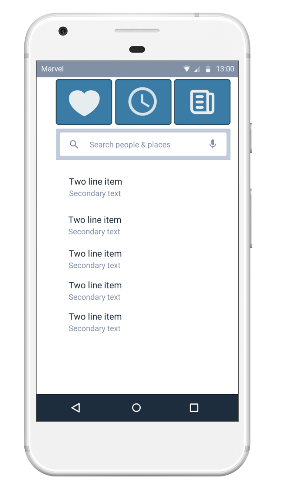

De innovatieroute UI/UX heeft 3 dagen geduurd. Het vond gedeeltelijk plaats in de Corda Campus en bij AppWise. De eerste dag werd georganiseerd door AppWise. De tweede en derde dag werd georganiseerd door Humix, Fectiv en AppFoundry. We hebben informatie gekregen over Service Design, Wireframing, Prototyping, User Center Design, etc.
De eerste dag hebben we een inleiding tot Service Design gekregen. Vooraleer we echt begonnen aan Service Design, kregen we informatie over wie ‘AppWise x Wisemen’ is. Appwise rolt vanuit Limburg apps uit voor klanten wereldwijd. Ze staan voor cocreatie van mobile convenience met een positieve impact. Dat houdt in strategie, design, development en activatie van native apps voor iOS en Android. Vervolgens hebben we enkele definities besproken zoals CX, UX en UI. CX is een afkorting voor Customer Experience. Customer Experience bestaat uit het ontwerpen en reageren op interacties van de klant om aan hun verwachtingen te voldoen of deze te overtreffen. UX is een afkorting voor User Experience. User Experience is het proces waarbij het ontwerpteam zich richt op betekenisvolle en relevante ervaringen voor de gebruikers. Uiteindelijk UI is afkorting voor User Interface. Na de uitleg van CX, UX en UI hebben we informatie over de plan van aanpak gekregen. Er werd uitgelegd hoe deze traject eruit ziet. Daarna hebben we informatie gekregen over de theorie van Customer Journeys. Punten zoals alle contactpunten tussen een consument en een merk, product of dienst kwamen aanbod. Hoe dit vervolgens kan leiden tot een gunstiger concurrentiepositie. Hierna was een interactieve workshop georganiseerd. We moesten de app ‘tinder’ een andere look and feel geven. We hebben in een groep van 3 of 4 een customer journey opgesteld. Daarna hebben we enkele wireframes gemaakt en de nodige documentatie bijgeschreven. Uiteindelijk moesten we ons idee pitchen aan de hele groep. De dag werd afgesloten met een quiz via MentiMeter. De winnende team kreeg een prijs. Helaas waren wij niet de winnaars. De tweede dag was in Corda Conference zaal 4. Eerst hebben we informatie gekregen over de UX principes. Na de theoretische uitleg begon de praktijk opdracht. We moesten een product bedenken voor een bepaalde thema. Daarbij moesten we noteren wat we willen bereiken met het product. Ons idee was een betere versie van de bestaande app genaamd ‘Waze’. Vervolgens hebben we een probleemstelling formuleert. Dit werd volgens de HMW principe (How Might We). Daarna hebben we enkele user noden en wensen geïdentificeerd. Deze hebben we genoteerd op stickers. We mochten een paar keer rond gaan om te kijken wat de andere groepen hebben genoteerd. We mochten stemmen op stickers die we interessant vonden. Uiteindelijk moesten we hieruit een paar kiezen. Hieruit volgde een customer journey mapping. De derde dag hebben we eerst theorie over wireframing gekregen. Daarna hebben we in team wireframes uitgewerkt aan de hand van customer journeys. Vervolgens hebben we prototypes uitgewerkt met Marvel App. Het was de eerste keer dat ik Marvel App heb gebruikt. Het is een zeer interessante app om prototypes te maken. Je bent wel beperkt. Na een aantal projecten moet de je volledige versie aanschaffen. Onderling hebben we bepaald welke wireframes het beste was en deze hebben we aan elkaar gekoppeld. Hierna hebben we informatie over de belang van User Testing en Design Handoff gekregen. De dag werd afgesloten met het pitchen van de oplossing aan de hele groep.
Het was een zeer leuke en leerrijke ervaring in zo’n korte periode van 3 dagen. Tijdens deze innovatieroute heb ik geleerd op welke punten je moet opletten voor dat je en scherm gaat bouwen. Ik heb voor de eerste keer prototypes en wireframes gebouwd. Mijn wireframes en prototypes werden geapprecieerd door mijn team. Mijn sterke punt was dat ik een oog heb voor detail. De uitleg van deze innovatieroute was ook van toepassing tijdens de IT project. Dankzij deze innovatieroute had ik een voorsprong op mijn teamgenoten en kon hun op weg sturen bij het ontwikkelen van wireframes en prototypes. Tijdens de IT heb ik een grote deel van de prototypes gebouwd. Dit keer heb ik wel AdobeXD gebruikt. Ik vind AdobeXD een betere tool dan Marvel. Je bent minder beperkt dan Marvel. Je kunt wireframes en prototypes tegelijk bouwen. Ik heb deze activiteit gekozen voor mijn portfolio omdat ik de kennis uit deze innovatieroute levenslang zal meenemen bij mijn professionele carrière. Mijn design vaardigheden zijn ook verbeterd. Deze innovatieroute was een geweldige ervaring die een meerwaarde heeft geboden aan mijn opleiding als professionele bachelor. Het uitleg dat we kregen was zeer geschikt voor onze richting. Tijdens onze studie wordt er weinig aandacht gekregen aan UX/UI. Ik hoop dat er meer seminaries of innovatieroutes zoals deze wordt georganiseerd. Wij zijn uiteindelijk degene die applicaties gaan ontwikkelen en de feel and look gaan geven. Het is belangrijk dat wij de regels ook kennen want niet elke bedrijf heeft een UX/UI designer.